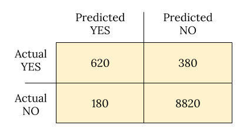
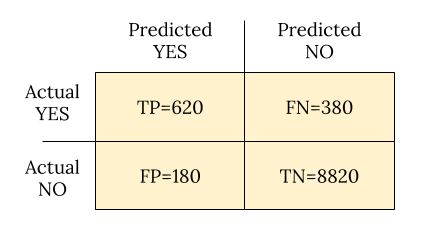
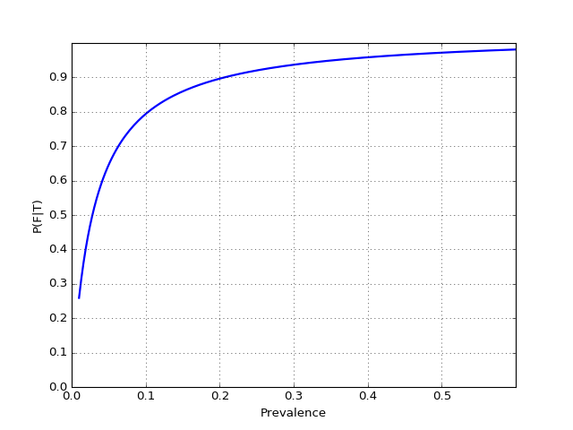

This winter was one of the worst flu seasons in recent years, so I found myself curious to learn more about the diagnostic flu tests available to doctors in addition to the usual "looks like bad cold but no signs of bacteria" strategy. There's a wide array of RIDTs (Rapid Influenza Dignostic Tests) available to doctors today [1], and reading through literature quickly gets you to decipher statements like:
Overall, RIDTs had a modest sensitivity of 62.3% and a high specificity of 98.2%, corresponding to a positive likelihood ratio of 34.5 and a negative likelihood ratio of 0.38. For the clinician, this means that although false-negatives are frequent (occurring in nearly four out of ten negative RIDTs), a positive test is unlikely to be a false-positive result. A diagnosis of influenza can thus confidently be made in the presence of a positive RIDT. However, a negative RIDT result is unreliable and should be confirmed by traditional diagnostic tests if the result is likely to affect patient management.
While I heard about statistical test quality measures like sensitivity before, there are too many terms here to remember for someone not dealing with these things routinely; this post is my attempt at documenting this understanding for future use.
A table of test outcomes
Let's say there is a condition with a binary outcome ("yes" vs. "no", 1 vs 0, or whatever you want to call it). Suppose we conduct a test that is designed to detect this condition; the test also has a binary outcome. The totality of outcomes can thus be represented with a 2-by-2 table, which is also called the Confusion Matrix.
Suppose 10000 patients get tested for flu; out of them, 9000 are actually healthy and 1000 are actually sick. For the sick people, a test was positive for 620 and negative for 380. For the healthy people, the same test was positive for 180 and negative for 8820. Let's summarize these results in a table:
Now comes our first batch of definitions.
- True Positive (TP): positive test result matches reality - person is actually sick and tested positive.
- False Positive (FP): positive test result doesn't match reality - test is positive but the person is not actually sick.
- True Negative (TN): negative test result matches reality - person is not sick and tested negative.
- False Negative (FN): negative test result doesn't match reality - test is negative but the person is actually sick.
Folks get confused with these often, so here's a useful heuristic: positive vs. negative reflects the test outcome; true vs. false reflects whether the test got it right or got it wrong.
Since the rest of the definitions build upon these, here's the confusion matrix again now with them embedded:
Definition soup
Armed with these and N for the total population (10000 in our case), we are now ready to tackle the multitude of definitions statisticians have produced over the years to describe the performance of tests:
- Prevalence: how common is the actual disease in the population
- (FN+TP)/N
- In the example: (380+620)/10000=0.1
- Accuracy: how often is the test correct
- (TP+TN)/N
- In the example: (620+8820)/10000=0.944
- Misclassification rate: how often the test is wrong
- 1 - Accuracy = (FP+FN)/N
- In the example: (180+380)/10000=0.056
- Sensitivity or True Positive Rate (TPR) or Recall: when the
patient is sick, how often does the test actually predict it correctly
- TP/(TP+FN)
- In the example: 620/(620+380)=0.62
- Specificity or True Negative Rate (TNR): when the patient is not sick,
how often does the test actually predict it correctly
- TN/(TN+FP)
- In the example: 8820/(8820+180)=0.98
- False Positive Rate (FPR): probability of false alarm
- 1 - Specificity = FP/(TN+FP)
- In the example: 180/(8820+180)=0.02
- False Negative Rage (FNR): miss rate, probability of missing a sickness
with a test
- 1 - Sensitivity = FN/(TP+FN)
- In the example: 380/(620+380)=0.38
- Precision or Positive Predictive Value (PPV): when the prediction
is positive, how often is it correct
- TP/(TP+FP)
- In the example: 620/(620+180)=0.775
- Negative Predictive Value (NPV): when the prediction is negative, how
often is it correct
- TN/(TN+FN)
- In the example: 8820/(8820+380)=0.959
- Positive Likelihood Ratio: odds of a positive prediction given that the
person is sick (used with odds formulations of probability)
- TPR/FPR
- In the example: 0.62/0.02=31
- Negative Likelihood Ratio: odds of a positive prediction given that the
person is not sick
- FNR/TNR
- In the example: 0.38/0.98=0.388
The wikipedia page has even more.
Deciphering our example
Now back to the flu test example this post began with. RIDTs are said to have sensitivity of 62.3%; this is just a clever way of saying that for a person with flu, the test will be positive 62.3% of the time. For people who do not have the flu, the test is more accurate since its specificity is 98.2% - only 1.8% of healthy people will be flagged positive.
The positive likelihood ratio is said to be 34.5; let's see how it was computed:
This is to say - if the person is sick, odds are 35-to-1 that the test will be positive.
And the negative likelihood ratio is said to be 0.38:
This is to say - if the person is not sick, odds are 1-to-3 that the test will be positive.
In other words, these flu tests are pretty good when a person is actually sick, but not great when the person is not sick. Which is exactly what the quoted paragraph at the top of the post ends up saying.
Back to Bayes
An astute reader will notice that the previous sections talk about the probability of test outcomes given sickness, when we're usually interested in the opposite - given a positive test, how likely is it that the person is actually sick.
My previous post on the Bayes theorem covered this issue in depth [2]. Let's recap, using the actual numbers from our example. The events are:
 : test is positive
: test is positive- : test is negative
- : person actually sick with flu
- : person doesn't have flu
Sensitivity of 0.623 means ; similarly, specificity is . We're interested in finding , and we can use the Bayes theorem for that:
Recall that is the prevalence of flu in the general population; for the sake of this example let's assume it's 0.1; we'll then compute by using the law of total probability as follows:
Obviously, , so:
And then:
So the probability of having flu given a positive test and a 10% flu prevalence is 79%. The prevalence strongly affects the outcome! Let's plot as a function of for some reasonable range of values:
Note how low the value of the test becomes with low disease prevalence - we've also observed this phenomenon in the previous post; there's a "tug of war" between the prevalence and the test's sensitivity and specificity. In fact, the official CDC guidelines page for interpreting RIDT results discusses this:
When influenza prevalence is relatively low, the positive predictive value (PPV) is low and false-positive test results are more likely. By contrast, when influenza prevalence is low, the negative predictive value (NPV) is high, and negative results are more likely to be true.
And then goes on to present a handy table for estimating PPV based on prevalence and specificity.
Naturally, the rapid test is not the only tool in the doctor's toolbox. Flu has other symptoms, and by observing them on the patient the doctor can increase their confidence in the diagnosis. For example, if the probability given 10% prevalence is 0.79 (as computed above), the doctor may be significantly less sure of the results if flu symptoms like cough and fever are not demonstrated, etc. The CDC discusses this in more detail with an algorithm for interepreting flu results.
| [1] | Slower tests like full viral cultures are also available, and they are very accurate. The problem is that these tests take a long time to complete - days - so they're usually not very useful in treating the disease. Anti-viral medication is only useful in the first 48 hours after disease onset. RIDTs provide results within hours, or even minutes. |
| [2] | In that post we didn't distinguish between sensitivity and specificity, but assumed they're equal at 90%. It's much more common for these measures to be different, but it doesn't actually complicate the computations. |